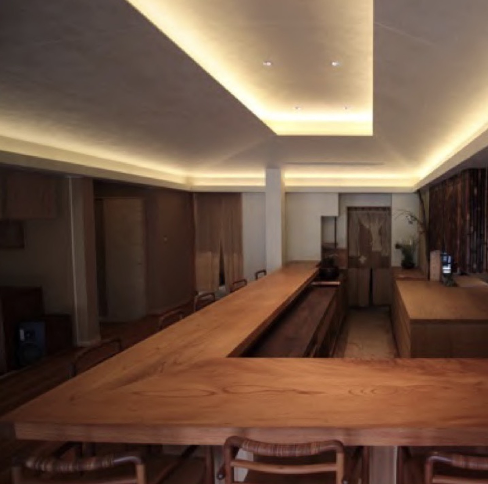
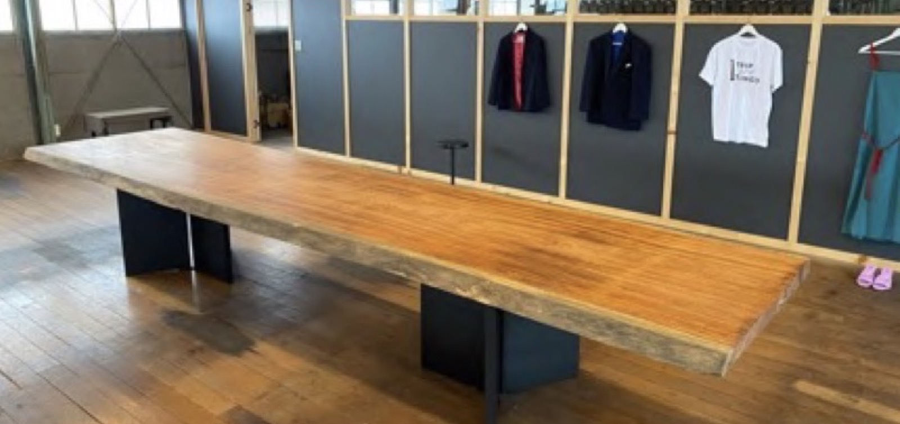
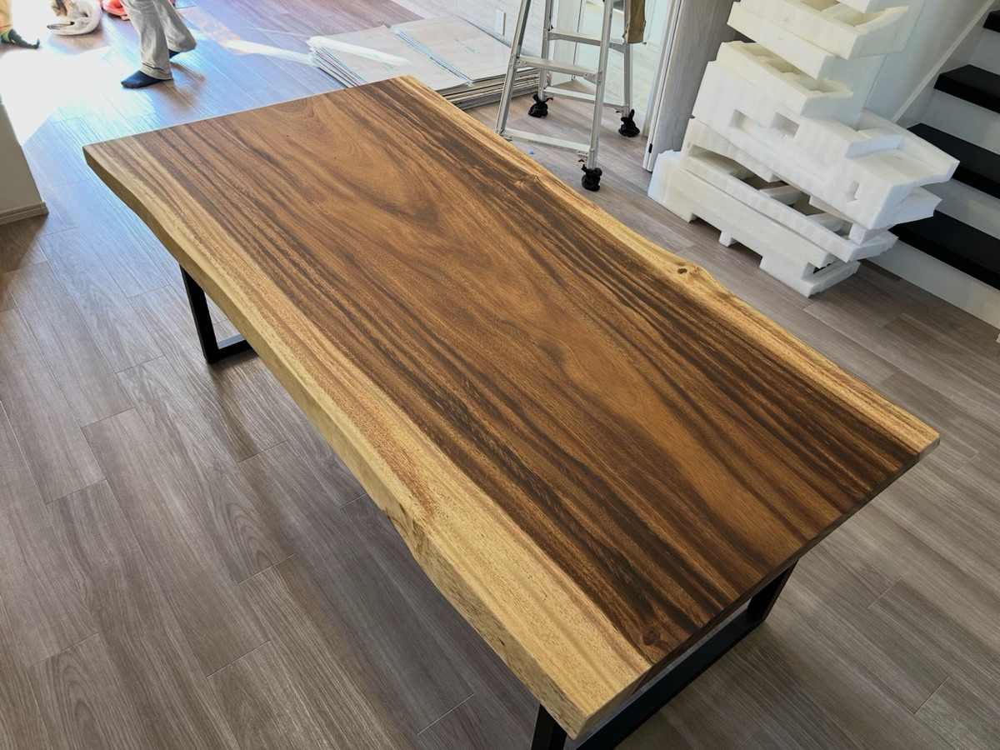
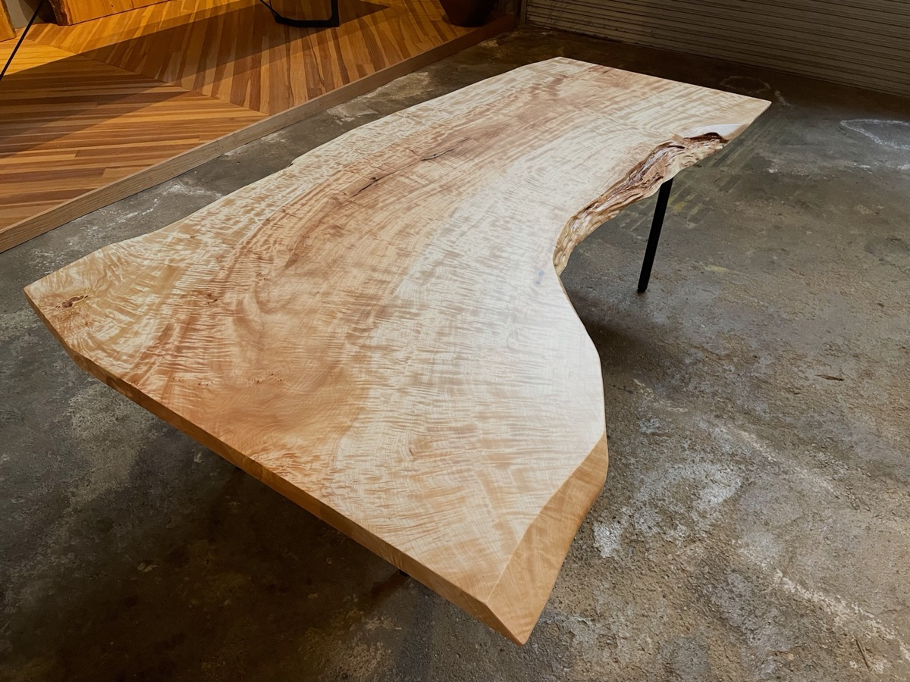
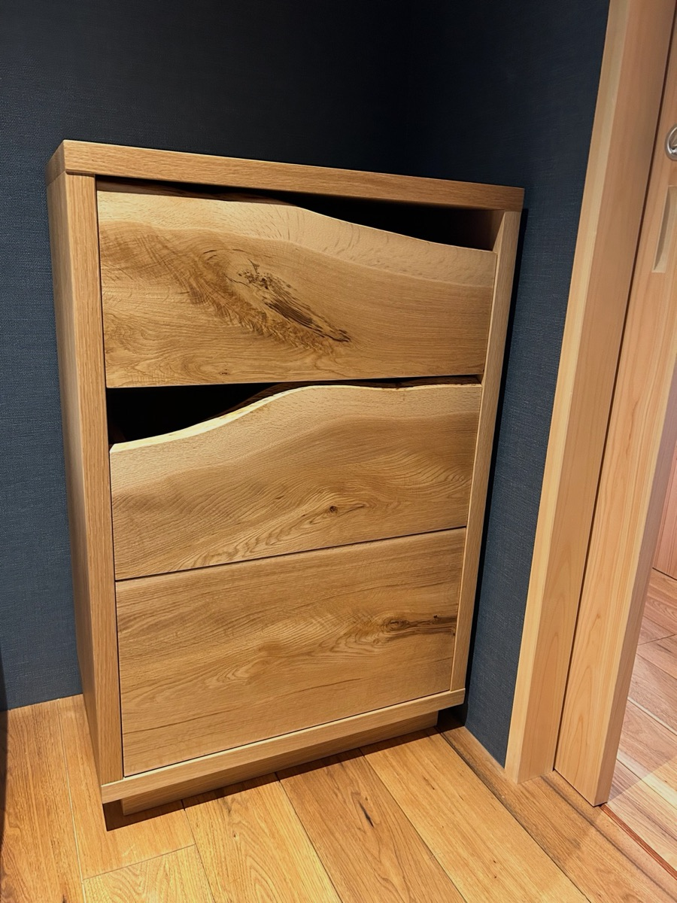
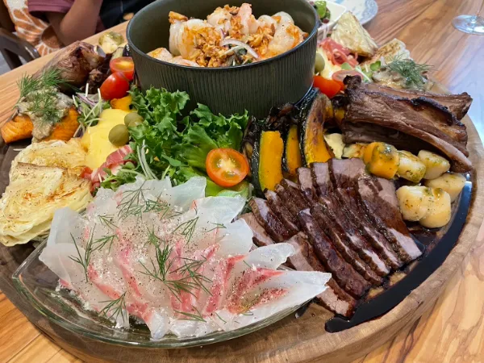
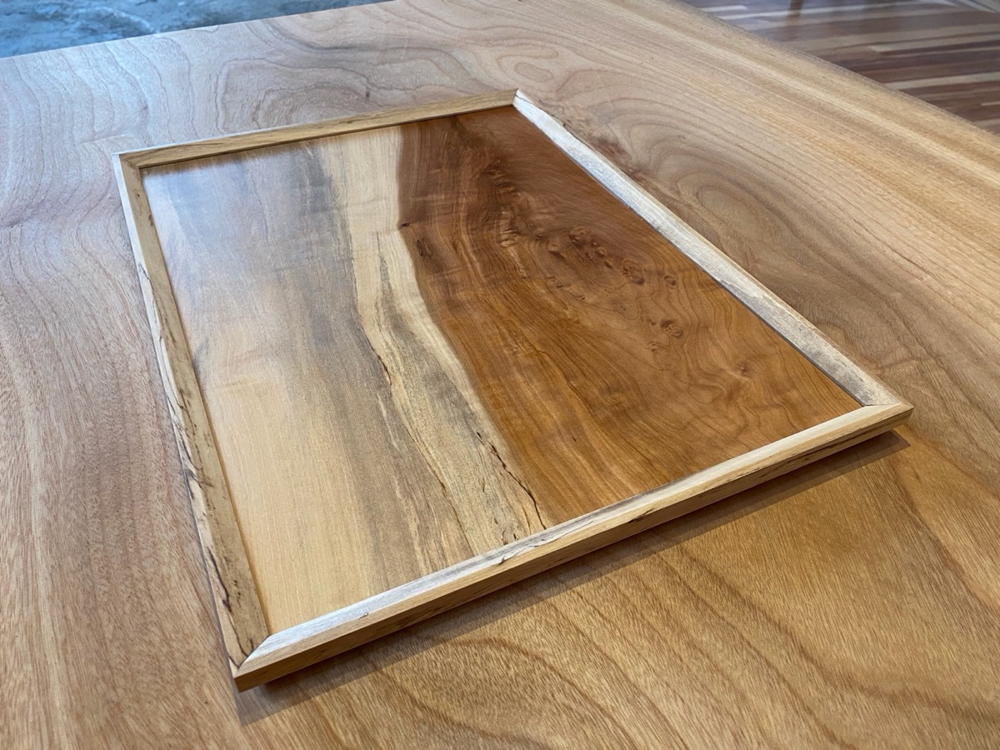

WORKS
制作事例
カウンターや一枚板テーブルから、空間を彩るオブジェ、現場に直送する造作材、法人様向けの木工品まで。これまでに手がけた仕事の一部をご紹介します。

オープンキッチンの一枚板カウンター
飲食店／耳を残した長尺の一枚もの

カウンター
飲食店／カウンター天板の加工

鮨屋の付け台カウンター
飲食店／木目を活かした仕上げ

L字カウンター
飲食店／ダイニングカウンター

特徴的な耳の一枚板カウンター
飲食店／厨房前の客席カウンター

割れすら個性のダイニングテーブル
レジンによる割れ・穴の埋め加工

ちぎり加工の一枚板テーブル
割れをちぎりで留めた意匠

和室の一枚板座卓
大広間に合わせた長尺天板

ショップの展示テーブル
店舗／アイアン脚との組み合わせ

耳を活かしたテーブル天板
木目と耳の表情を残す仕上げ

飲食店の特別室のレジンテーブル
普通では使えない木材にも活路を

モンキーポッドの一枚板テーブル
住宅／濃淡のある木目を活かした仕上げ

栃の大判一枚板
縮み杢が出た大判天板の仕上げ

飲食店 一枚板テーブル、カウンター
飲食店／客席テーブルの製作

希少なオリーブの輪切りのローテーブル
根元の形をそのまま活かし、割れをレジンで補修

自然木のエントランスオブジェ
店舗／坪庭のディスプレイ

杉板のパッチワークウォール
アートウォール

ウォークインクローゼットの棚板
住宅／棚板の加工

洗面カウンター
住宅／天板と下棚の製作

耳付き前板のチェスト
住宅／収納家具

オリジナルカッティングボード
法人様向け／ロゴ入れ・中〜大ロット

サービングプレート
法人様向け／店舗使用品の製作

木製サイン
法人様向け／レーザー刻印の表示板

無垢材のトレイ
法人様向け／樹種違いで製作